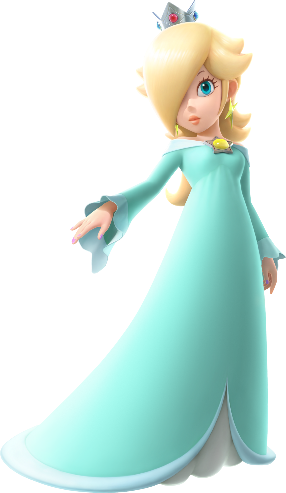

Rosalina, conocida como Rosetta (ロゼッタ Rozetta?) en Japón y como Estela en España, es un personaje de la franquicia de Mario. Debutó en Super Mario Galaxy (2007) como personaje no jugable que reside en el Observatorio de Cometas, el mundo central del juego. En el juego, Rosalina es la madre adoptiva de los Lumas, una especie ficticia de criaturas similares a estrellas, y también observadora del cosmos. Desde entonces, Rosalina ha aparecido como personaje jugable en juegos posteriores, como las series Mario Kart, Mario Party y Super Smash Bros., así como en Super Mario 3D World. También aparece en Mario + Rabbids Sparks of Hope (2022), donde es poseída por Cursa, el antagonista principal.
